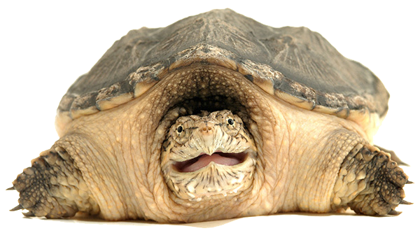

Call us Now
(908)-421-2397
Opening Time
Mon-Sat 8:00 am - 6:00 pm
Send Mail
cl.kasslertaub@gmail.com
Address
19 Turtle Lane, Snake NJ
Cats and dogs are great, but they are also time-consuming and expensive. Why not try an exotic pet? Centipedes, snakes, turtles, and tarantulas make wonderful pets. They do not smell, cost a lot of money, require walks, or make a lot of noise.
If you have to get up at 2 A.M. to take your pet outside in the freezing cold to pee, then you are not living your best life.
Taking care of a tarantula is like taking care of a bottle of dirt! They eat once a week at most.
Once you have one centipede, you'll want many, many more! We're here to help you not spend all your money on bugs.
Centipedes are clean, intelligent animals.
They are sensitive and will never judge you.
Your centipede will always love you, as long as you remember to feed it.
You will see results immediately!
You will no longer spend hundreds of dollars on vet bills.
We would love to talk to you about the benefits of centipedes in your life. Please feel free to reach out and we will send you all sorts of animal pictures. Text "send pede pics" to 908-421-2397 for immediate relief.